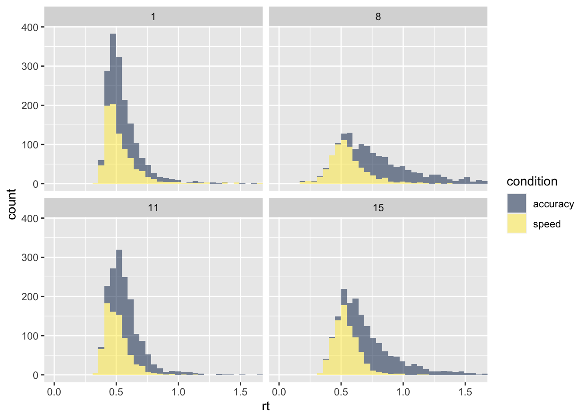
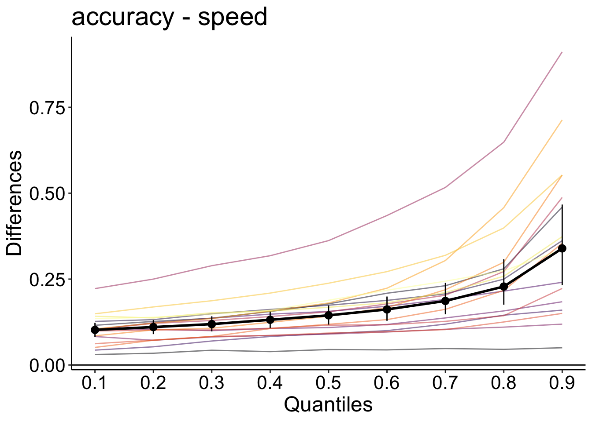
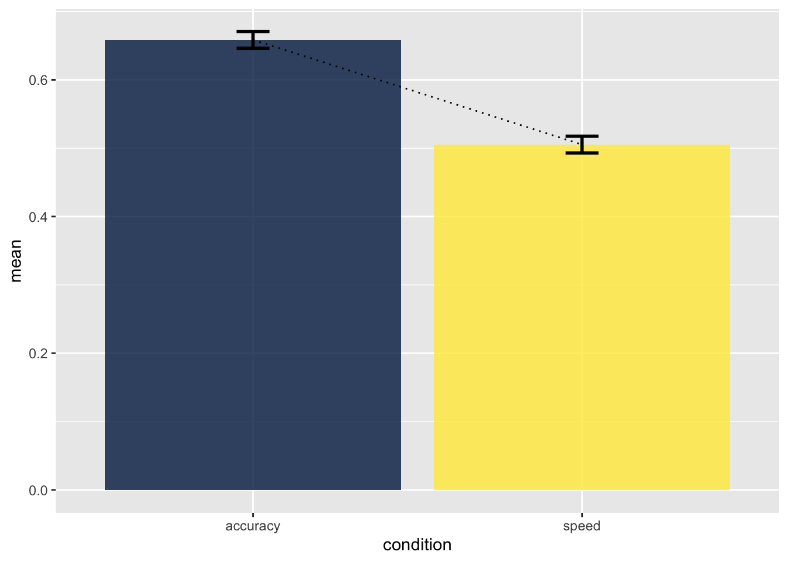

library(tidyverse)
library(rtdists)
library(viridis)
data(speed_acc)
speed_acc <- speed_acc |>
as_tibble()
df_speed_acc <- speed_acc |>
# zwischen 180 ms and 3000 ms
filter(rt > 0.18, rt < 3) |>
# zu Character konvertieren (damit filter funktioniert)
mutate(across(c(stim_cat, response), as.character)) |>
# Korrekte Antworten
filter(response != 'error', stim_cat == response) |>
# wieder zu Factor konvertieren
mutate(across(c(stim_cat, response), as_factor))Reaktionszeiten: II
Anwendungen.
Andrew Ellis ![]()
Hierarchical Shift Function
Wir schauen uns Daten aus einem Lexical Decision Task (Wagenmakers and Brown 2007) an, bei dem Versuchspersonen Wörter als entweder word oder non-word klassifizieren mussten. Es ist bekannt, dass Wörter welche häufiger vorkommen schneller klassifiziert werden können, als seltene Wörter. In diesem Experiment mussten Versuchspersonen diesen Task unter zwei Bedingungen durchführen. In der speed Bedingung mussten sie sich so schnell wie möglich entscheiden, in der accuracy Bedingung mit so wenig Fehler wie möglich.
Hier untersuchen wir also den Unterschied in der Reaktionszeit zwischen zwei “within” Bedingungen. Die Daten befinden sich im Package rtdists, welches zuerst installiert werden sollte.
df_speed_acc# A tibble: 27,936 × 9
id block condition stim stim_cat frequency response rt censor
<fct> <fct> <fct> <fct> <fct> <fct> <fct> <dbl> <lgl>
1 1 1 speed 5015 nonword nw_low nonword 0.7 FALSE
2 1 1 speed 6481 nonword nw_very_low nonword 0.46 FALSE
3 1 1 speed 3305 word very_low word 0.455 FALSE
4 1 1 speed 4468 nonword nw_high nonword 0.773 FALSE
5 1 1 speed 1047 word high word 0.39 FALSE
6 1 1 speed 5036 nonword nw_low nonword 0.603 FALSE
7 1 1 speed 1111 word high word 0.435 FALSE
8 1 1 speed 6561 nonword nw_very_low nonword 0.524 FALSE
9 1 1 speed 1670 word high word 0.427 FALSE
10 1 1 speed 6207 nonword nw_very_low nonword 0.456 FALSE
# … with 27,926 more rowsWir schauen uns vier Versuchspersonen grafisch an:
data_plot <- df_speed_acc |>
filter(id %in% c(1, 8, 11, 15))
data_plot |>
ggplot(aes(x = rt)) +
geom_histogram(aes(fill = condition), alpha = 0.5, bins = 60) +
facet_wrap(~id) +
coord_cartesian(xlim=c(0, 1.6)) +
scale_fill_viridis(discrete = TRUE, option = "E")
Note
Schauen Sie sich alle Vpn an.
Note
Was würden Sie anhand der Histogramme erwarten?
Note
Berechnen Sie nun die Differenzen der Dezile zwischen den Bedingungen für jede Versuchsperson.
out_speed_acc <- rogme::hsf_pb(df_speed_acc, rt ~ condition + id)p_speed_acc <- rogme::plot_hsf_pb(out_speed_acc, interv = "ci")
p_speed_acc
In dieser Grafik sehen wir auf der X-Achse die Dezile der accuracy Bedingung und auf der Y-Achse die Differenz accuracy - speed. Die Differenz ist bei jedem Dezil positiv und scheint steig grösser zu werden. Die accuracy Bedingung führt also zu längeren und variableren Reaktionszeiten. Die Bedingungen unterscheiden sich im Median, aber wenn wir nur das berücksichtigt hätten, würden wir verpassen, dass sich die Verteilungen sehr stark am rechten Ende der Verteilung unterscheiden.
Zum Vergleich berechnen wir noch Bedingungsmittelwerte der Median Reaktionszeiten.
by_subject <- df_speed_acc |>
group_by(id, condition) |>
summarise(mean = median(rt))
agg <- Rmisc::summarySEwithin(by_subject,
measurevar = "mean",
withinvars = "condition",
idvar = "id",
na.rm = FALSE,
conf.interval = .95)agg |>
ggplot(aes(condition, mean, fill = condition)) +
geom_col(alpha = 0.8) +
geom_line(aes(group = 1), linetype = 3) +
geom_errorbar(aes(ymin = mean-se, ymax = mean+se),
width = 0.1, size=1, color="black") +
scale_fill_viridis(discrete=TRUE, option="cividis") +
theme(legend.position = "none")
References
Wagenmakers, Eric-Jan, and Scott Brown. 2007. “On the Linear Relation Between the Mean and the Standard Deviation of a Response Time Distribution.” Psychological Review 114 (3): 830–41. https://doi.org/10.1037/0033-295X.114.3.830.
Reuse
Citation
BibTeX citation:
@online{ellis2022,
author = {Andrew Ellis},
title = {Reaktionszeiten: {II}},
date = {2022-04-12},
url = {https://kogpsy.github.io/neuroscicomplabFS22//pages/chapters/08_response_times_ii.html},
langid = {en}
}
For attribution, please cite this work as:
Andrew Ellis. 2022. “Reaktionszeiten: II.” April 12, 2022.
https://kogpsy.github.io/neuroscicomplabFS22//pages/chapters/08_response_times_ii.html.